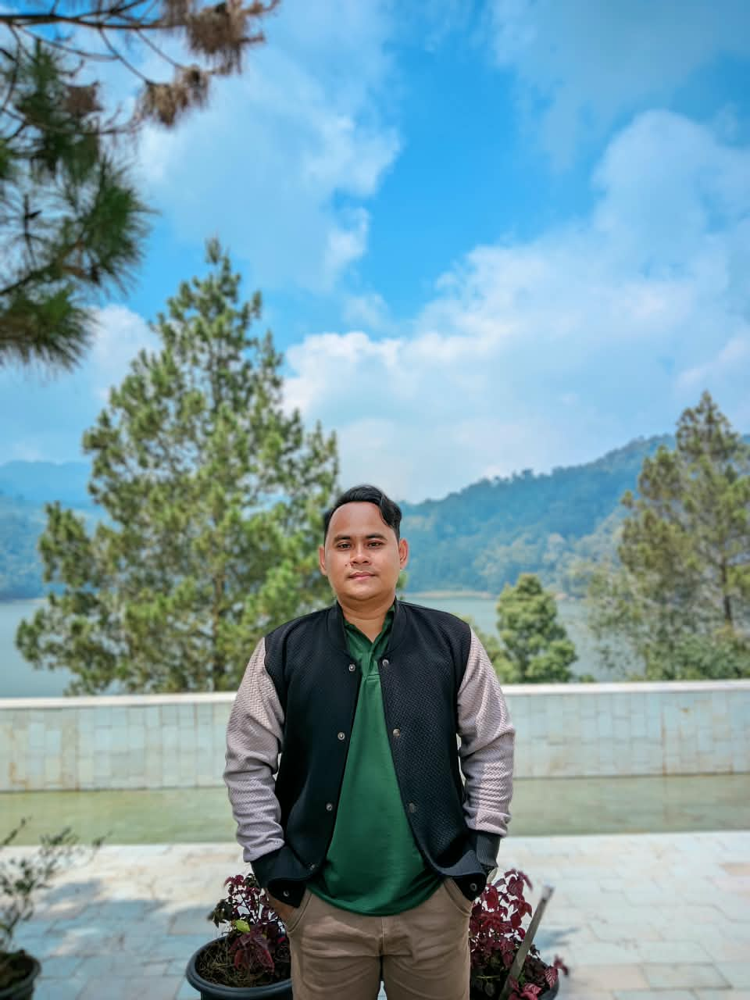
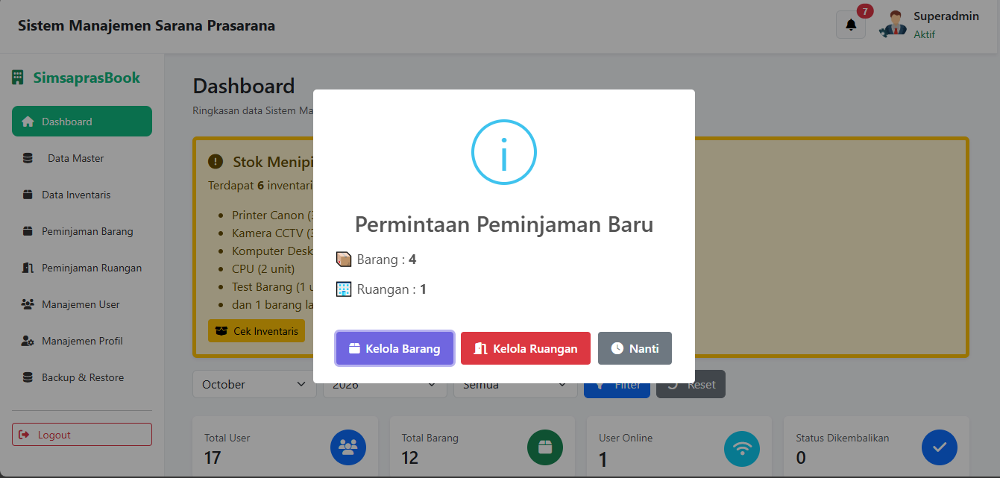
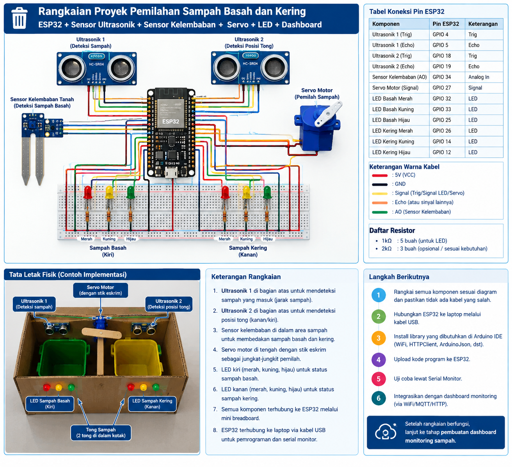

Coffee Sales
BUSINESS INTELLIGENCE
Hello, welcome to my portfolio!
Saya memiliki ketertarikan dalam dunia pendidikan dan teknologi, khususnya pengembangan pembelajaran coding, aplikasi web, serta proyek Internet of Things. Saya percaya bahwa teknologi dapat menjadi sarana untuk menciptakan pembelajaran yang kreatif, inovatif, dan bermakna.

Mengenal lebih dekat perjalanan, latar belakang, dan fokus profesional saya.
Saya adalah Arjun Yuda Firwanda, lulusan Sarjana Terapan bidang Teknik Informatika dengan minat pada pendidikan Informatika, pemrograman, dan pengembangan teknologi digital.
Saat ini saya mengembangkan kompetensi sebagai calon Guru Informatika melalui Program Pendidikan Profesi Guru (PPG) di Universitas Pendidikan Indonesia. Saya memiliki ketertarikan dalam merancang pembelajaran coding yang interaktif, kreatif, dan berpusat pada peserta didik.
Selain bidang pendidikan, saya juga mengembangkan aplikasi web dan proyek Internet of Things sebagai bentuk penerapan teknologi dalam menyelesaikan permasalahan nyata.
Saya percaya bahwa proses belajar terbaik terjadi ketika pengetahuan dapat diterapkan untuk menciptakan sesuatu yang bermanfaat.
Teknologi dan kompetensi yang saya pelajari serta terapkan dalam pengembangan pendidikan dan proyek digital.
Kompetensi dalam merancang dan mengembangkan proses pembelajaran Informatika.
Pemrograman dan pengembangan logika komputasional untuk membangun solusi digital.
Pengembangan aplikasi web dan sistem informasi menggunakan teknologi frontend dan backend.
Perancangan dan pengembangan proyek mikrokontroler, sensor, serta sistem otomatisasi.
Beberapa proyek teknologi yang saya kembangkan sebagai bentuk penerapan kemampuan programming, software development, dan Internet of Things.
Aplikasi kalkulator diskon berbasis Python Flask untuk membantu pengguna menghitung subtotal, nominal diskon, dan total pembayaran secara otomatis.

02 / 12Sistem Informasi Manajemen Sarana dan Prasarana yang dikembangkan untuk membantu pengelolaan informasi fasilitas dan inventaris sekolah.

03 / 12Prototipe sistem pemilahan sampah basah dan kering menggunakan ESP32, sensor kelembapan, sensor ultrasonik, dan servo motor.
BUSINESS INTELLIGENCE
Dashboard interaktif untuk menganalisis performa penjualan kopi, menyajikan insight bisnis, dan membantu pemantauan kinerja penjualan secara berkala.
SALES PERFORMANCE
Dashboard analisis untuk mengevaluasi performa penjualan sneakers, distribusi produk, dominasi penjualan, serta pola penjualan sebagai pendukung keputusan bisnis.
RANDOM FOREST
Aplikasi machine learning untuk memprediksi penerimaan siswa baru menggunakan algoritma Random Forest. Riwayat analisis disimpan menggunakan JSON.
SUPPORT VECTOR REGRESSION
Aplikasi prediksi kebutuhan kalori harian menggunakan algoritma Support Vector Regression (SVR), dengan model machine learning yang dilatih menggunakan data.
CLASSIFICATION MODELS
Aplikasi klasifikasi biner berbasis machine learning dengan Random Forest, SVM, Logistic Regression, KNN, dan Gradient Boosting.
K-MEANS ALGORITHM
Aplikasi segmentasi pelanggan menggunakan K-Means Clustering, dilengkapi filter periode waktu, evaluasi Silhouette Score, dan visualisasi hasil cluster.
K-NEAREST NEIGHBORS
Sistem analisis kelayakan kredit menggunakan algoritma K-Nearest Neighbors (KNN) untuk membantu pengelompokan risiko nasabah menjadi Good Risk atau Bad Risk.
CATBOOST CLASSIFIER
Aplikasi klasifikasi status pertumbuhan balita menggunakan algoritma CatBoostClassifier dengan preprocessing data dan prediksi kategori status pertumbuhan.
DECISION TREE
Aplikasi klasifikasi tingkat kemiskinan wilayah di Indonesia menggunakan Decision Tree Classifier, dengan fitur pengolahan data dan prediksi kategori wilayah.
Perjalanan akademik dan pengalaman profesional dalam bidang pendidikan, pengembangan teknologi, data analytics, dan machine learning.
Academic Background
Mengikuti Program Pendidikan Profesi Guru (PPG) bidang Informatika untuk mengembangkan kompetensi pedagogik, profesional, sosial, dan kepribadian sebagai calon guru.
Menempuh pendidikan tinggi di bidang Teknik Informatika dengan fokus pengembangan kompetensi pemrograman, analisis data, algoritma, dan teknologi informasi.
Professional & Teaching Experience
Mendukung pelaksanaan kegiatan pelatihan dan webinar teknologi informasi dengan membantu coach serta memberikan pendampingan teknis kepada peserta.
Bertanggung jawab dalam pemeliharaan, analisis, dan pengelolaan data penjualan serta data distributor untuk mendukung kebutuhan reporting dan aktivitas Trade Marketing.
Membimbing dan memberikan pelatihan kepada client dalam memahami analisis statistik serta penerapan algoritma Machine Learning untuk mendukung proses analisis dan pengambilan keputusan.
Mendukung kegiatan pengelolaan dan pengolahan data di Badan Pusat Statistik Kota Bandung melalui kegiatan data entry, monitoring data, digitasi peta, serta pengembangan analisis statistik menggunakan pemrograman R.
Menggabungkan pengalaman pendidikan, teknologi, dan analisis data untuk terus belajar, mengembangkan kompetensi, serta menciptakan solusi digital yang memberikan dampak positif.
Program sertifikasi, bootcamp, dan pelatihan profesional yang mendukung pengembangan kompetensi di bidang data analytics, data science, artificial intelligence, dan statistical analysis.
Mengikuti program pelatihan intensif untuk mengembangkan kompetensi analisis data, pengolahan data, statistik dasar, pengukuran metrik bisnis, serta visualisasi data untuk menghasilkan insight yang mendukung pengambilan keputusan.
Mengikuti program Microcredential Certification Associate Data Scientist dengan fokus pembelajaran teknologi, aplikasi, dan metode Artificial Intelligence (AI), serta pengembangan model Machine Learning.
Mengikuti webinar dan workshop mengenai penerapan statistika menggunakan R Statistics Cloud serta implementasi algoritma regresi linier berganda untuk analisis hubungan antarvariabel dan prediksi.
Tertarik untuk berkolaborasi, berdiskusi mengenai teknologi, pendidikan, atau pengembangan proyek? Mari terhubung dan menciptakan sesuatu yang bermakna.
Saya terbuka untuk kesempatan mengajar coding, kolaborasi pengembangan teknologi, serta proyek pendidikan dan software development.
Every great collaboration starts with a simple conversation.